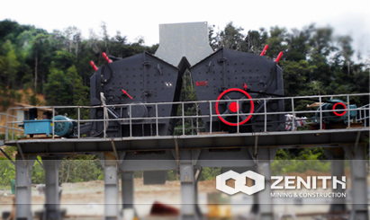

- 

Gold Ore Crusher In Ghana
Nowadays, gold market calls for high-quality gold ore crushing plant to improve the product quality and reduce the operation cost. After years' constant exploration and development, Zenith has exported many sets of gold ore crushing plants to Ghana, where local gold producers think highly of our products, in their opinion, compared with other brands, gold ore crusher machine produced by Zenith are able to stand high loading requirements, work continuously, and save the operation cost a lot.
Process of Gold ore Crushing
As we all know, gold-bearing rocks are very hard, so it takes a longer time and needs more machines to crush gold-bearing rocks. No matter which method you adopt in the process of gold mining, crushing is the primary step, to some degree, the effect of crushing can determine the quality of product. The hardness of gold ore is about 6, therefore, when crushing gold ore, it can be divided into two crushing stages, coarse crushing and secondary crushing. After the two crushing stages, large gold-bearing rocks are crushed into small gold-bearing particles, which will be further processed by grinding mills, such as ball mills, rod mills, and vertical mills.
An Efficient Gold ore Crusher-- PFW Impact Crusher
Typically, gold ore crushing plant refers to crushing machines used in the crushing process of gold-bearing rocks. Impact crusher is often used as secondary gold ore crushing plant in the process of gold mining. The PFW series impact crusher is also called European style impact crusher, often used in the secondary crushing and fine crushing. It is very suitable for open-pit crushing in quarries. PFW series impact crushers are adopted by heavy-duty rotor design, unique hammer locking system, and interchangeable wearing parts. In addition, reformative adjusting device reduces the overhaul time of machine. Adopting the rotor analysis, every PFW impact crusher can ensure excellent stableness and reliability.
Supplier of Gold ore Crusher in Ghana
Zenith is a professional supplier of gold ore crushing plant for Ghana gold producers. Nowadays, with the rapid economy development of Ghana, more and more gold investors choose to buy gold ore crushing plant from China. To our delight, Shanghai Zenith is able to witness the progress of their business. We have established a friendly relationship with local gold investors, meanwhile, they also advertise our products through their valuable support. We will try our best to help local gold producers by the ways of supplying more high-quality products and better service, if you have some interest in our gold ore crushing plant, please contact us!